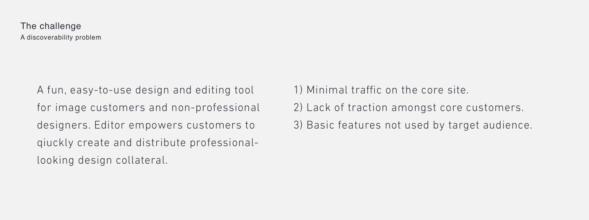
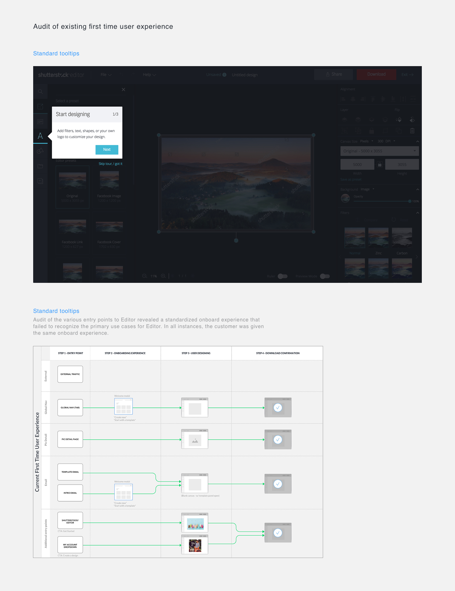
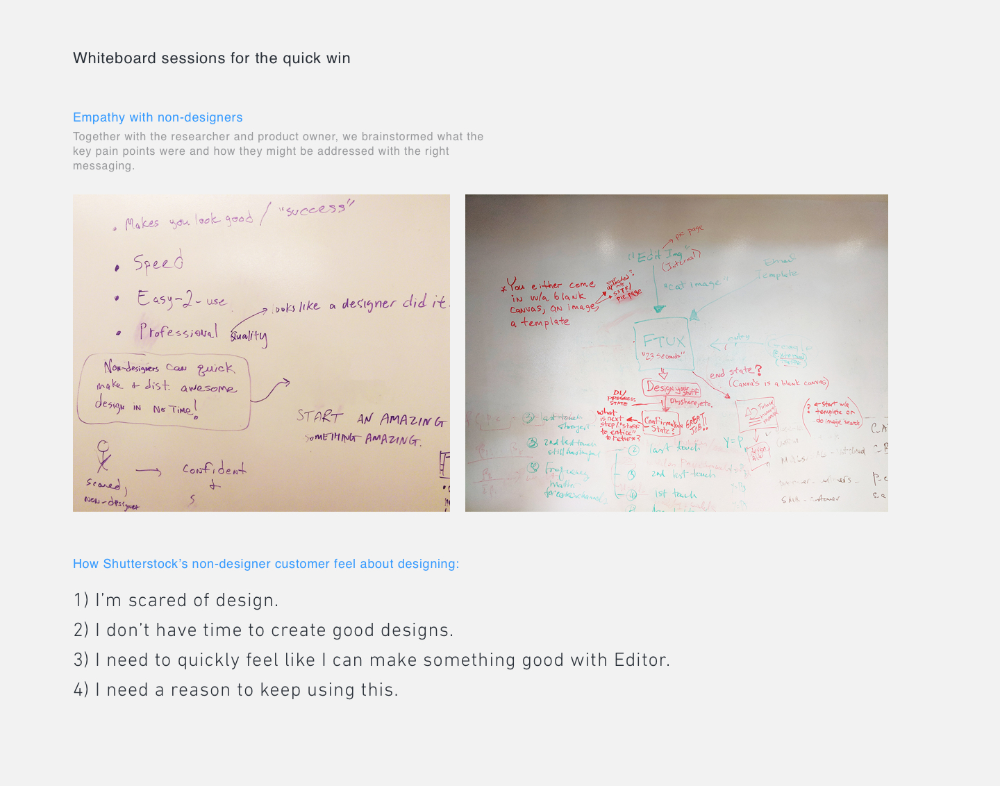
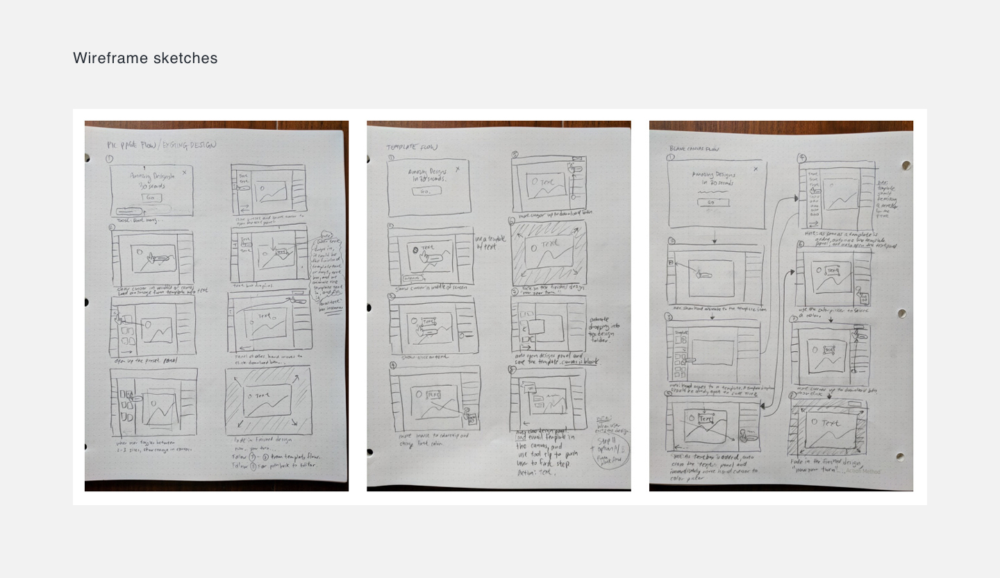
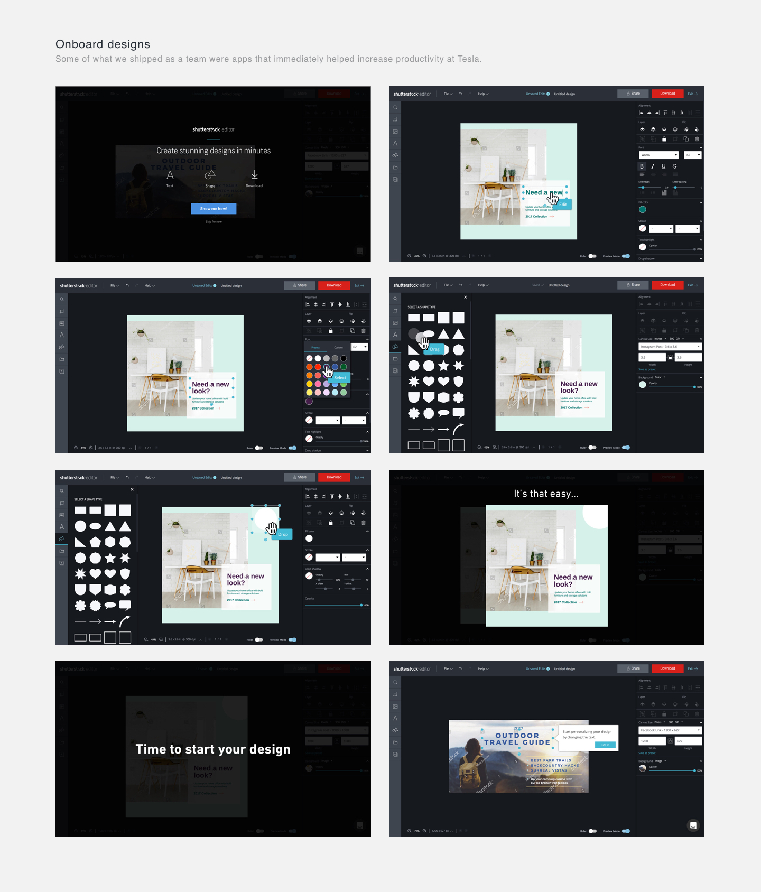

Background:
Editor began as a lightweight image crop tool for Shutterstock customers. By the time I joined in early 2016, the team had completed several rounds of research to conclud that there was an opportunity to launch new services to help simplify post-download workflows for customers. Editor was a project that focused on image editing as a service. I joined as the second designer on the team, contributing designs for discovery, research, and production work. A few months later, management offered me the opportunity to become the lead designer on the project. I accepted the new role and became responsible for the driving the UX process, leading kickoffs, building the roadmap, and alignment with stakeholders across the organization.
My Role
As design lead on the Editor project, I worked closely with associate designers and partnered closely with a product owner to define the product vision and collected user feedback that informed product decisions.
Insight and Ideation
I worked with the product manager to define requirements and applied design thinking to uncover opportunities, customer pain points and provided design solutions that solved their problems.
UX Strategy and Vision
I presented research findings to leadership, provided analysis and design concepts that helped bridge the gap between business, product, and engineering. My efforts helped inspire the company by giving voice to the customer, creating more empathy used to build better products.
Planning and Definition
I helped suggest useful features by providing insight of the customer needs and goals. I created narratives that clarified task-driven designs and articulated the motivations of the customer.
Coordination
I collaborated with internal and external stakeholders to ensure business needs and user goals were coalesced into an aligned strategy. I coordinated with engineers, visual designers, and copywriters and communicated issues as they arose to ensure deadlines were met.
Execution and Validation
I paired with engineers through product delivery. Throughout the design review process, we collaborated to iron out edge cases. I monitored KPI's of released features and leveraged the new data to iterate towards better solutions.
The Challenge
Up until December 2017, the Editor team was focused on achieving feature-parity with our main competitor Canva. As this was happening, the user experience suffered. Our customer differed from Canva, but management became competitor-obsessed. We knew it was time to right the ship and pivot from a build-and-ship mindset since we were already feature-rich as an application. We needed to create holistic user experience.
Changes Aren't Easy
The shift to focus on the user experience proved difficult to accept in the beginning, especially for engineers who had been on the team longest. Several engineers wanted to continue along path of expanding the feature set. Although we had a robust tool, retention and engagement remained low. To get additional insight, I conducted interviews of several recent users.
Analyze The Customer Journey
Months had passed since the company had conducted customer interviews. Combining this insight with information gathered from the customer care logs, we presented to stakeholders a broad analysis of customer sentiment and identified several key issues:

We learned customers felt Editor was advanced, but they failed to interact with simple features. We noticed through data that customers who had interacted with the onboarding tour tended to be more engaged. We assumped that by improving the onboard experience, we could score an easy win. We hypothesized that although Editor had a simplistic UI, non-designer customer needed guidance and support. After an audit of our existing first time user experiences, we realized there was much to be done to redesign this important part of the customer journey.

Discovery
Through research we learned that the most advanced workflow applications offered customers onboard experiences that felt timely and appropriate. I began drafting initial plans to create our own blueprint for how users would encounter onboarding features throughout the site touchpoints and worked with platform designers who were creating the main site experience. Customers would encounter onboarding at various touchpoints some of which would drive users towards Editor.
The Vision
Shutterstock Editor was a feature-rich design tool built for a wide range of users with multiple entry points from the main site. The onboard experience needed to be flexible enough to cater to many different scenarios. It would need to be accessible during various stages of the customer journey, while accomplishing very different goals. We wanted to create an ongoing onboard experience that could raise confidence over time.
A Dynamic Onboard Experience
While we were making plans for the onboard design framework, we suddenly received a new mandate from leadership to focus on updating the first-time user onboard experience. Under pressure to deliver in 4 sprints, we adopted a lean ux approach, opting to make assumptions to be validated quickly, over heavy documentation and too much research. We decided to abandon further work on the broader onboard framework. I embraced this shift in strategy and to help energize the team, the product owner invited engineers who were interested in the project to attend a workshop where I presented competitive research to the team.
We noticed using positive tones in product copy seemed to have the effect of empowering and engaging the user.
We also noticed that while some apps provided the traditional tour guided onboard experience, more advanced onboard techniques such as 1) progressive disclosure and 2) animated feature tours, could hold the users' attention longer. We knew our customers were busy SMB's and wouldn't necessarily engage with something that required clicks; we hypothesized that an animated tour would be a more effective way to highlight features.

A Framework For Onboarding
While I was initially disappointed we would not be investing time into designing a broader site-wide onboard system, I felt like it was the right call to scope the project and focus solely on the first time user onboard experience. It was a smart decision to improve a known issue and learn quickly before investing further into the main site. I knew other teams needed this design, and ultimately Shutterstock would benefit from what we build.
To unify the onboard experiences as users entered the site from various entry point, I first audited the existing user flows and proposed a short auto-playing movie that would highlight features. As we continued to find more use cases, the flows continued to grow in complexity. Although the documents were a pain to maintain, they ultimately helped engineering and design align and close the communication gaps. Engineers would rely on this document to define the code architecture necessary for the onboard experience.
Storyboarding
As engineers began to code the flow architecture, I began to design the individual scenes. Drawing on my experiences as an art director in my ad agency days, I sketched individual frames in low fidelity as an inexpensive way to estimate the design effort. Because the scenes were not static click-throughs, storyboarding the entire length of the tutorial was necessary to show engineers the animations needed and helped engineers estimate accurately.

Once engineers completed the onboard architecture, we updated our onboard flows to include additional conditions. The tour would display different features based on a) user actions b) state of the design canvas.
Prototyping
While pairing with engineers, the lead developer on tour animations questioned the speed and movement of the onboard designs. To communicate the desired design, I used AfterEffects to create a detailed prototype with the desired motion design.
Specification
We used Zeplin to deliver design documents to engineers, which were accompanied by high fidelity prototypes. The combination of these documents painted a clear picture of the product experience we pursued.
Validation: Did we make the right assumptions?
Up until this point, we had been making broad assumptions. Once the engineers got to a point where the coded prototypes were ready to be tested, design and dev paired to fine-tune the animation. We also began testing with internal employees to ascertain the effectiveness of the designs.
Does the messaging in the onboard experience address the motivations of the customer?
Bringing It All To Life
Below are screenshots of the final onboard design:

Post Launch Observations
Several weeks after launching our revised onboard experience, we noticed...
Measuring Success
The results proved that we could engage visitors through education and addressing their emotional needs. This was important because the tour let us put the great functionality that already exists within Editor to work; and there's a lot to teach our users. What's more, the onboard experience was targeted to ensure the tour was helpful. I'm am excited to see how this approach scales to the rest of Shutterstock!
The success of the new onboard experience is only the start. We have more work to do to educate users about all the great features Editor provides. In addition, I look forward to advocating an onboard system that could benefit Shutterstock, as the company continues to create additional workflow services.
Reflection: A Few Lessons Learned
Onboard experiences should never be an afterthought for consumer-facing products. Investing in building a proper onboard experience means customers are happier, more engaged, and better at using your product. Shutterstock is still growing and learning how to be a service provider. With the Editor onboard experience, we are moving the ship foward in the right direction.